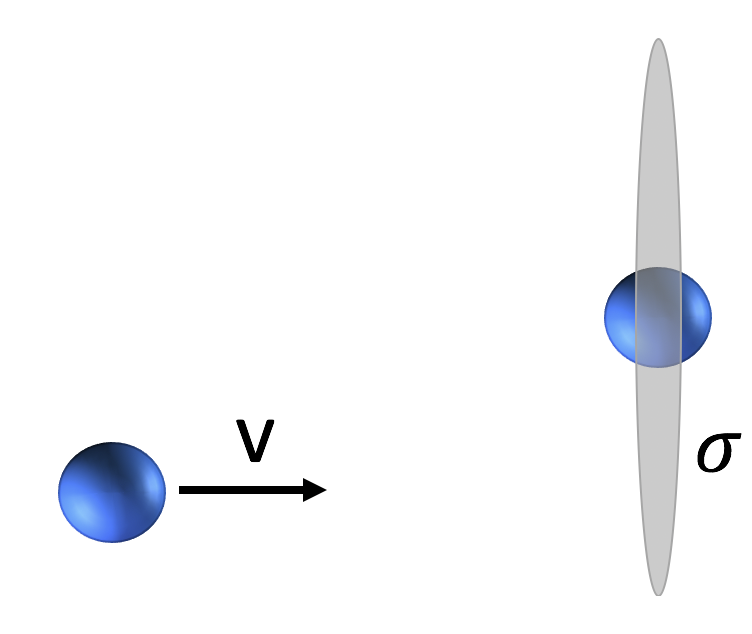

Forrige side🙂 🙁FusjonPADLET

ϵAB = ϵ0, ABXAXBραTβ Masseforholdene XA og XB er andelen av massen av gassen som tilsvarer A og B-kjerner: $$X_A=\frac{n_Am_A}{n\mu m_H}$$ der nA er antall A-kjerner per volum (antalltetthet), mA er massen til kjerne A, n er total antalltetthet til gassen, altså totalt antall gasspartikler (av alle typer) per volum og μmH er midlere masse til en gasspartikkel. Vi ser at vi over brøkstreken har den totale masse i A-kjerner per volum mens vi under brøkstreken har total gassmasse per volum, altså vanlig massetettet ρ. Neste side